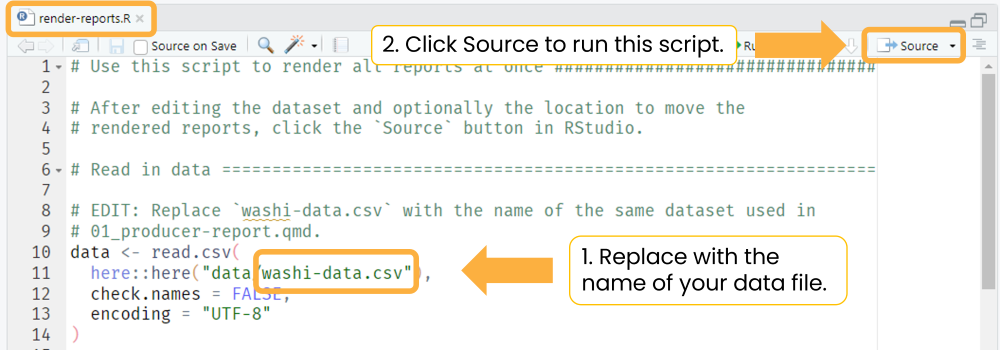

Render a single report at a time with the RStudio user interface, or
programmatically render all reports (for all producers and in all
formats) with the render_reports.R script.
Using RStudio
To generate and preview the report with the default parameters1, use the
Render button or keyboard shortcut
(Ctrl + Shift + K). Use this workflow to quickly iterate on
content and style. For HTML reports, check the
Render on Save option to automatically update the preview
whenever you save the document.

The Render the example reports tutorial provides additional details on rendering reports with the RStudio user interface.
Using render_reports.R
render-reports.R creates a dataframe and then uses
purrr::pwalk() to iterate over each row, rendering all
reports in both HTML and MS Word formats. After rendering, all reports
are moved to a folder called reports in the project
directory.
Edit
render_reports.Rto read in the same dataset in theload-datachunk of01_producer-report.qmd. For example, if your dataset is calledmy-data.csv, replacewashi-data.csvwithmy-data.csvin Line 11.Click
Sourceto run this script and generate all reports in all formats at once.

Optionally, to render reports for only a subset of producers, filter the dataframe to include only this subset. The last line of the below code block demonstrates how to filter the data to three specific producers.